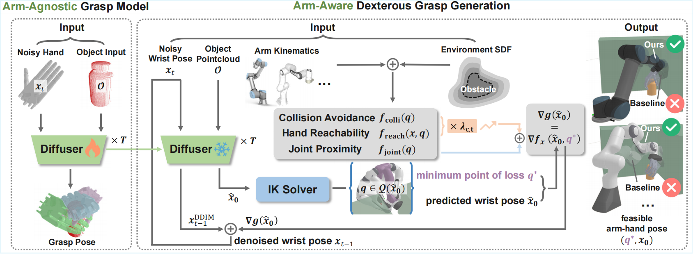

Dexterous grasp generation that considers arm-related constraints is crucial in real-world scenarios involving arm-environment collision avoidance, workspace boundary grasps, and consecutive grasping. Existing hand-centric grasp models, which primarily focus on the floating hand’s pose, are insufficient for such cases. Conventional arm-aware methods either rely on rejection sampling to discard infeasible samples or require retraining on arm-specific data, leading to low sample efficiency under adverse conditions or limited generalization across different robots and environments. To overcome these limitations, this letter presents an arm-aware dexterous grasp generation framework that leverages pretrained arm-agnostic grasp models while integrating arm and environmental information only at inference time. Specifically, we formulate arm-aware constrained grasp generation as a joint optimization of hand pose and arm configuration, and derive closed-form gradients for arm-related constraints. Assuming the hand pose distribution is represented by a diffusion model, we prove that gradient-based optimization is equivalent to guided diffusion sampling, steering near-feasible samples toward the feasible region. Through comprehensive evaluation involving 10k objects across 6 scenarios, we demonstrate that the proposed framework generates feasible grasps in highly constrained settings with significantly higher probability, highlighting its advantages in real-world applications.
Overview of the proposed arm-aware dexterous grasp generation method. Initially, we pretrain an arm-agnostic diffusion model to capture the distribution of wrist poses for floating hands. During sampling, arm kinematics and environment SDF are integrated as constraints, with their gradients guiding the denoising process. This approach significantly enhances the proportion of feasible grasps, adaptable to various arm-hand configurations and constrained environments.

The key contributions and novelties of our approach beyond existing methods include:
Real-world experiments are conducted on a UR5 arm and a LEAP Hand. An Azure Kinect depth camera captures the object’s partial point cloud.
We evaluate grasp generation in real confined environments by testing eight everyday objects across two challenging setups—the Corridor and Shelf scenes. For each object, we sample 40 candidate grasps and execute the top 10 arm-feasible ones with the highest predicted success.
We showcase the effectiveness of the proposed method in generating reachable grasps near the arm’s workspace boundary. A generated grasp is executed both with and without guidance.